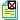
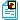
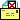
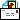

- report not yet submitted
- report submitted with NO photo
 - report submitted with NO photo because photo upload failed
 - report submitted with photo
- report sent to client with NO photo because no photo supplied
 - report sent to client with NO photo because photo upload failed
 - report sent to client with photo